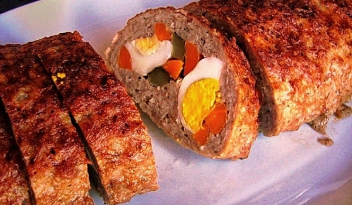

Руло Стефани

Необходими продукти:
- 1 кг кайма
- 1 бр. яйце
- 30 г галета
- 5 г чубрица
- 1/2 връзка магданоз
- 1 глава кромид лук
- 1 с.л. (10 г) сол
- 1 с.л. (10 мл) олио
Приготвяне:
Каймата се омесва с яйцето, магданоза, настъргания на ренде лук, галетата, солта и чубрицата и се оставя да отлежи 10 минути. Морковите се варят в подсолена вода 10 минути и се нарязват на пръчици. Двете яйца се сваряват, обелват се и се нарязват на четвъртинки. Каймата се поставя върху влажна кухненска кърпа (алуминиево фолио) и се разстила в овална форма с дебелина 1 см. В единия край се редят моркови, яйца и нарязана на ивички кисела краставичка. Чрез повдигане на кърпата внимателно се оформя руло. Поставя се в тава, така че да лежи върху страната, където е затворено. Поръсва се с галета. В тавата се наливат 2 пръста вода и олиото. Пече се 45-50 минути в предварително загрята на 180 С фурна. Поръсва се с кашкавал и се запича още 10 минути.
Крехки свински пържоли
Необходими продукти:
- 4-5 бр. свински пържолки
- 1/3 ч.ч. олио (може и зехтин)
- 1 с.л. мед
- 1-2 с.л. лимонов сок (може и оцет - 1 с.л. )
- 1 с.л. горчица
- тъмен соев сос
- 1/2 ч.ч. вино (може и бира)
- черен пипер, чубрица
Начин на приготвяне:
Пържолите се измиват хубаво. Маринатата се приготвя като се смесят всички продукти за нея, като е желателно първо да са меда, олиото и лимоновия сок. Бърка се до разтваряне на меда. Ако се сложи и соевия сос, няма да може да видите дали меда се е разтопил. Добавяте и останалите продукти и се бърка до хомогенна смес. Ако харесвате или не някоя от съставките, може да я увеличите или намалите. Умишлено не съм писала сол, защото соевия сос е доста солен.
С така приготвената марината се намазват хубаво пържолите и се слагат в съд с капак в хладилника да престоят 1 час, може и повече. Остатъка от маринатата се излива в съда върху наредените пържоли.
След това се нареждат в подмазнена тава, налива се малко вода и се покриват с фолио. Може да се залеят и с маринатата, в която са престояли. Пекат се на 200С градуса около 1 час под фолио. След това фолиото се маха и се допича още 15-20 минути.